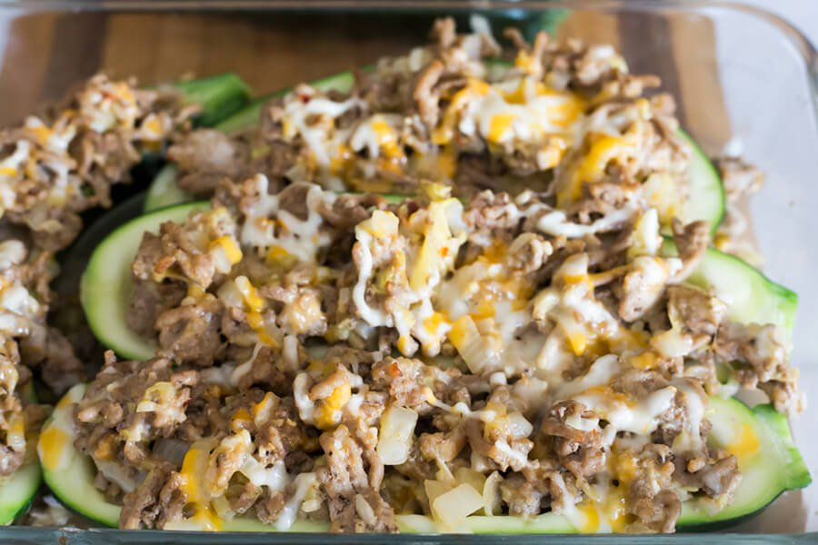
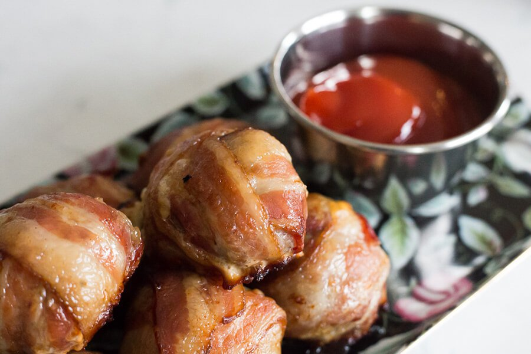

Jump to:
Breakfast
Lunch
Dinner
Sweets
Snacks
Breakfast

Keto Chorizo Omelette
Author: Hey Keto Mama
Cook time: 15 mins
Total time: 15 mins
Servings: 2
Ingredients:
- 2 large eggs
- 1/4 cup spinach, chopped
- 2 tablespoons white onion
- 2 tablespoons heavy whipping cream
- 2 ounces chorizo
- 1/4 cup cheddar cheese, shredded
- Salt & Pepper
Directions:
- Cook Chorizo according to instructions on package.
- Whisk eggs, spinach, heavy whipping cream, and onion together.
- Pour mixture into non-stick skillet at medium low heat.
- Flip omelette when it starts to firm. **If omelette is still too liquidy, cover omlette briefly to help firm up.**
- Sprinkle cheese on other side of omelette.
- Remove from heat, move omelette to a plate and add Chorizo, then roll the omelette.
- Top omelette with your choice! Suggestions: sour cream, diced avocado, bacon and more Chorizo.
Keto Oatmeal
Author: Diet Doctor
Cook Time: 5 minutes
Servings: 1
Ingredients:
- 1 cup coconut milk or unsweetened almond milk
- 1 tablespoon flaxseed, whole
- 1 tablespoon chia seeds
- 1 tablespoon sunflower seeds
- 1 pinch salt
Directions:
- Mix all ingredients in a small sauce pan. Bring to a boil. Lower the heat and let simmer until desired thickness is reached. This shouldn't take more than a couple minutes.
- Top with butter and coconut milk – or almond milk and cinnamon – or fresh, unsweetened berries. The possibilities are endless!

Low-carb cauliflower hash browns
Author: Diet Doctor
Prep Time: 10 minutes
Cook Time: 20 minutes
Servings: 4
Ingredients:
- 1 lb cauliflower
- 3 eggs
- ½ yellow onion, grated
- 1 teaspoon salt
- 2 pinches pepper
- 4 oz. butter, for frying
Directions:
- Rinse, trim and shred the cauliflower.
- Mix with the other ingredients in a bowl. Set aside for 5–10 minutes.
- Melt a generous amount of butter or oil on medium heat in a large skillet. The cooking process will go quicker if you plan to have room for 3–4 pancakes (about 3–4 inches each) at a time. Use the oven on low heat to keep the first batches of pancakes warm while you make the others.
- Place scoops of the grated cauliflower mixture in the frying pan and flatten them carefully until they measure about 3–4 inches in diameter.
- Fry for 4–5 minutes on each side. Adjust the heat to make sure they don’t burn. Remember — patience is a virtue — if you flip the pancakes too soon they may fall apart!
Lunch
Sausage Zucchini Boats
Author: RuledMe
Cook Time: 30 minutes
Servings: 4
Ingredients:
- 2 medium zucchini
- 1 pound ground sausage
- 1 cup shredded cheddar cheese
- ½ medium onion, chopped
- 1 tablespoon minced garlic
- 1 teaspoon paprika
- ½ teaspoon red pepper flakes
- 1 teaspoon dried oregano
- ½ cup chicken broth
- Salt and pepper to taste
Directions:
- Cut your zucchini in half, length wise.
- Using a spoon or melon-baller, scoop out the zucchini so it becomes a shell for the fillings.
- Chop up the zucchini that you scooped out of the skins.
- In a pan saute your onions, garlic, and scooped zucchinion medium heat.
- Mix in your spices.
- Turn the heat up to medium-high then add in the sausage.
- Once the sausage has cooked, mix in your cheese, cooking until it melts.
- Divide the cooked zucchini and sausage mixture equally among the zucchini shells.
- Top with some more cheese and place into a casserole dish.
- Pour a ½ cup of chicken broth into the bottom of the dish.
- Bake at 350°F for 30 minutes.
Vegetarian Keto Club Salad
Author: RuledMe
Servings: 3
Ingredients:
- 2 tablespoons sour cream
- 2 tablespoons mayonnaise
- ½ teaspoon garlic powder
- ½ teaspoon onion powder
- 1 teaspoon dried parsley
- 1 tablespoon milk
- 3 large hard boiled eggs, sliced
- 4 ounces cheddar cheese, cubed
- 3 cups romaine lettuce, torn into pieces
- ½ cup cherry tomatoes, halved
- 1 cup diced cucumber
- 1 tablespoon dijon mustard
Directions:
- Prepare the dressing by mixing the sour cream, mayonnaise, and dried herbs until combined.
- Add one tablespoon of milk and mix. If the dressing seems too thick, add another tablespoon of milk.
- Layer your salad with the fresh veggies, cheese, and sliced egg. Add a spoonful of Dijon mustard in the center.
- Drizzle with the prepared dressing, about 2 tablespoons for one serving, then toss to coat.
Dinner
Loaded Keto Cauliflower Bowl
Author: Hey Keto Mama
Servings: 4
Ingredients:
- 2 cups cauliflower
- 3 tablespoons butter
- 1/4 cup diced onion
- 1/4 cup pickled jalapeno slices
- 2 cups shredded beef/chicken
- 2 ounces cream Cheese
- 1 cup shredded cheddar cheese
- 1/4 cup heavy cream
- 1/4 cup cooked crumbled bacon
- 2 tablespoons sliced green onions
Directions:
- Chop cauliflower into small pieces.
- Steam/cook cauliflower until fork tender and set to the side.
- Grab a skillet, set heat to medium and add butter, onion, and jalapeno slices.
- Reduce heat and add shredded meat of your choice and cream cheese.**If it begins to stick, reduce heat more.** Cook until cream cheese is heated and can be easily stirred.
- Turn off heat. Add cheddar cheese, heavy cream and cauliflower. Stir mixture until all cheeses are melted/combined.
- Sprinkle with crumpled bacon and green onions.
Keto Chicken Casserole
Author: Diet Doctor
Prep Time: 10 minutes
Cook Time: 45 minutes
Servings: 4
Ingredients:
- 2 lbs chicken thighs
- 7 oz. shredded cheese
- 1 cup heavy whipping cream
- ¾ lb cauliflower, in florets
- 1 leek
- 4 oz. cherry tomatoes
- 2 tablespoons green pesto
- ½ lemon juice
- 3 tablespoons butter
- Salt and Pepper
Directions:
- Preheat the oven to 400°F.
- Mix cream (or sour cream) with pesto and lemon juice. Salt and pepper to taste.
- Season the chicken thighs with salt and pepper, and fry in butter until they turn a nice golden brown.
- Place the chicken in a baking dish, and pour in the cream mixture.
- Chop the leek and cherry tomatoes. Top chicken with leek, tomatoes and cauliflower.
- Sprinkle cheese on top and bake in the middle of the oven for at least 30 minutes or until the chicken is fully cooked.
Sweets
Keto Lemon Bars
Author: Tasteaholics
Prep Time: 15 minutes
Cook Time: 45 minutes
Servings: 8
Ingredients:
- 1/2 cup butter, melted
- 1 3/4 cups almond flour
- 1 cup powdered Erythritol
- Erythritol is a natural sweetener that has zero calories.
- 3 medium lemons
- 3 large eggs
**What is erythritol?
Directions:
- Mix butter, 1 cup almond flour, 1/4 cup erythritol, and a pinch of salt. Press evenly into an 8×8″ parchment paper-lined baking dish.
- Bake for 20 minutes at 350 degrees F. Then, let cool for 10 minutes.
- In a bowl, zest one of the lemons, juice all 3 lemons, add the eggs, 3/4 cup erythritol, 3/4 cup almond flour and pinch of salt. Combine to make filling.
- Pour the filling onto the crust and bake for 25 minutes.
- Serve with lemon slices and a sprinkle of erythritol.
- Let lemon bars cool for at least 30 minutes before cutting.

Keto Brownies
Author: Elana's Pantry
Cook Time: 22-27 minutes
Servings: 8
Ingredients:
- 1 cup macadamia nuts
- 1/4 teaspoon salt
- 1/4 teaspoon baking soda
- 3 ounces dark chocolate, chopped
- 1/2 cup coconut oil, melted
- 2 tablespoons erythritol
- 3 large eggs
- 1 teaspoon vanilla
Directions:
- In a food processor pulse macadamia nuts, salt, and baking soda until the texture of gravel.
- Pulse in chocolate and coconut oil until smooth.
- Pulse in erythritol, eggs, and stevia.
- Transfer mixture to a greased 8 x 8 inch baking dish.
- Bake at 350 degrees F for 22-27 minutes, batter will set up when cooled.
- Cool 1 hour.
Snacks
Keto Bacon Burger Bombs
Author: RuledMe
Cook Time: 1 hour
Servings: 12
Ingredients:
- 12 slices of bacon
- 12 (1-inch) cubes smoked cheddar cheese
- 12 (1-ounce) rounds raw sausage patties
- To taste: cumin, onion powder, salt, pepper
Directions:
- Preheat your oven to 350°F. Lay out your sausage rounds on a cookie sheet lined with parchment paper.
- Dust your sausage with cumin, onion powder, salt and pepper.
- Place a piece of cheese in the middle of the sausage rounds.
- Form a ball around the cheese with the sausage. Roll it in your hands to make a good circle shape.
- Wrap your bacon around the sausage balls.
- Bake at 350°F for an hour. Enjoy with your favorite burger condiments!

Guacamole Deviled Eggs
Author: Elana's Pantry
Servings: 12
Ingredients:
- 6 large hard boiled eggs, cooled and peeled
- 2 ripe avocados
- ¼ cup cilantro, finely chopped
- 1 tablespoon chives, finely chopped
- 1 tablespoon lime juice
- ½ teaspoon sea salt
- 1 teaspoon red pepper flakes
- chili powder, for garnish
Directions:
- Cut eggs in half and remove yolks.
- In a medium bowl, mash yolks and avocados.
- Stir in cilantro, chives, lime juice, salt, and red pepper flakes.
- Scoop filling into egg whites with a 1 tablespoon ice cream scoop.
- Refrigerate until serving.
- Sprinkle with chili powder and serve.